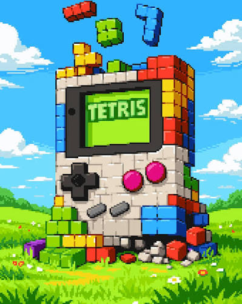

INSERT COIN TO CONTINUE
Efsaneler geri döndü.
Piksel piksel anılar, hiç bitmeyen bir oyun gecesi. Favorini seç ve oyuna başla.



GEÇMİŞE DÖNÜŞ BAŞLIYOR. JETON ATIN!
INSERT COIN TO CONTINUE
Piksel piksel anılar, hiç bitmeyen bir oyun gecesi. Favorini seç ve oyuna başla.
